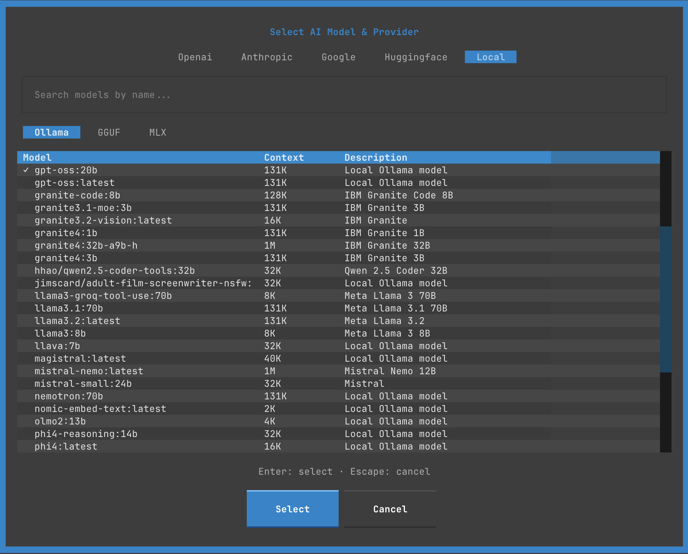

Modals & Dialogs¶
Consoul TUI features several modal dialogs for configuration and interaction. This guide covers each modal in detail.
Model Selector¶
Select AI model and provider.

Opening the Modal¶
Methods:
- Click the model indicator in header
- Press
^m
Layout¶
╔═══════════════════════════════════════════════════╗
║ Select AI Model & Provider ║
╠═══════════════════════════════════════════════════╣
║ [Openai] [Anthropic] [Google] [HuggingFace] [Local] ║
╠═══════════════════════════════════════════════════╣
║ 🔍 Search models by name... ║
╠═══════════════════════════════════════════════════╣
║ Model Context Description ║
║ ━━━━━━━━━━━━━━━━━━━━━━━━━━━━━━━━━━━━━━━━━━━━━━ ║
║ claude-3-5-haiku... 200K Legacy model ║
║ claude-3-7-sonnet... 200K Legacy model ║
║ claude-haiku-4-5... 200K Fastest near..║
║ claude-opus-4-1... 200K Exceptional.. ║
║ claude-sonnet-4... 200K Legacy model ║
║ claude-sonnet-4-5... 200K Smartest for..║
╠═══════════════════════════════════════════════════╣
║ Enter: select · Escape: cancel ║
╠═══════════════════════════════════════════════════╣
║ [Select] [Cancel] ║
╚═══════════════════════════════════════════════════╝
Provider Tabs¶
Switch between AI providers:
Anthropic (Claude)
- claude-3-5-haiku-20241022 (Legacy, use Haiku 4.5)
- claude-3-7-sonnet-20250219 (Legacy, use Sonnet 4.5)
- claude-3-haiku-20240307 (Legacy, use Haiku 4.5)
- claude-3-opus-20240229 (Legacy, use Opus 4.5)
- claude-haiku-4-5-20251001 (Fastest near-frontier intelligence)
- claude-opus-4-1-20250805 (Exceptional specialized reasoning)
- claude-opus-4-20250514 (Legacy, use Opus 4.5)
- claude-opus-4-5-20251101 (Premium intelligence + performance)
- claude-sonnet-4-20250514 (Legacy, use Sonnet 4.5)
- claude-sonnet-4-5-20250929 (Smartest for complex agents + coding)
OpenAI (GPT)

- gpt-4o
- gpt-4o-mini
- gpt-4-turbo
- gpt-4
- gpt-3.5-turbo
- o1-preview
- o1-mini
Google (Gemini)
- gemini-2.0-flash-exp
- gemini-1.5-pro
- gemini-1.5-flash
- gemini-1.0-pro
Local (Ollama) 
{kind=link}
- Lists locally installed Ollama models
- Shows model size and quantization
- Auto-detects available models
Model Information¶
Each model shows:
| Column | Description |
|---|---|
| Model | Full model identifier |
| Context | Context window size (e.g., 200K tokens) |
| Description | Model capabilities and use cases |
Search¶
Filter models by name:
- Focus search bar (
/or click) - Type model name or keyword
- Results filter in real-time
- Clear with
Esc
Search Examples:
- "sonnet" → Claude Sonnet models
- "4o" → GPT-4o variants
- "flash" → Gemini Flash models
- "7b" → 7 billion parameter local models
Selection¶
Keyboard:
1. Navigate with ↑ ↓
2. Switch tabs with Tab or 1-5
3. Press Enter to select
4. Press Esc to cancel
Mouse:
1. Click provider tab
2. Click model row
3. Click Select button
Configuration¶
Selected model is saved:
Settings Modal¶
Configure TUI appearance and behavior.

Opening the Modal¶
Methods:
- Press
^comma(Ctrl+,) - Click settings icon (⚙️) in header
Settings Tabs¶
1. Appearance¶
╔═══════════════════════════════════════════╗
║ Settings ║
╠═══════════════════════════════════════════╣
║ [Appearance] Performance Behavior Adv.. ║
╠═══════════════════════════════════════════╣
║ ║
║ Theme: ║
║ ▼ Consoul Dark ▼ ║
║ ║
║ Show Sidebar: ║
║ ☑ Enabled ║
║ ║
║ Show Timestamps: ║
║ ☑ Enabled ║
║ ║
║ Show Token Count: ║
║ ☑ Enabled ║
║ ║
║ Input Syntax Highlighting: ║
║ ☑ Enabled ║
║ ║
╠═══════════════════════════════════════════╣
║ Saving to global config: config.yaml ║
╠═══════════════════════════════════════════╣
║ [Apply] [Reset] [Cancel] ║
╚═══════════════════════════════════════════╝
Options:
- Theme: Choose from available themes (dropdown)
- Show Sidebar: Toggle conversation list visibility
- Show Timestamps: Display message timestamps
- Show Token Count: Display token usage metrics
- Input Syntax Highlighting: Highlight code in input
2. Performance¶
Performance Settings:
• Stream Tokens: ☑ Enabled
• Async Rendering: ☑ Enabled
• Virtual Scrolling: ☑ Enabled
• Cache Conversations: ☑ Enabled
• Max Cached: [50]
• Lazy Load Threshold: [100] messages
Options:
- Stream Tokens: Real-time streaming vs batch display
- Async Rendering: Non-blocking UI updates
- Virtual Scrolling: Render only visible messages
- Cache Conversations: Keep recent conversations in memory
- Max Cached: Number of conversations to cache
- Lazy Load Threshold: Messages before lazy loading kicks in
3. Behavior¶
Behavior Settings:
• Auto-save Conversations: ☑ Enabled
• Confirm on Quit: ☑ Enabled
• Confirm on Clear: ☑ Enabled
• Auto-scroll to New: ☑ Enabled
• Tool Execution Sound: ☐ Disabled
• Error Notifications: ☑ Enabled
• Auto-generate Titles: ☑ Enabled
Options:
- Auto-save Conversations: Save after each message
- Confirm on Quit: Prompt before quitting
- Confirm on Clear: Prompt before clearing conversation
- Auto-scroll to New: Auto-scroll on new messages
- Tool Execution Sound: Beep on tool execution (future)
- Error Notifications: Show error toasts
- Auto-generate Titles: Generate conversation titles
4. Advanced¶
Advanced Settings:
• Debug Mode: ☐ Disabled
• Log Level: ▼ INFO ▼
• API Timeout: [30] seconds
• Max Retries: [3]
• Conversation History Limit: [100] messages
• Tool Approval Timeout: [60] seconds
Options:
- Debug Mode: Enable verbose logging
- Log Level: DEBUG, INFO, WARNING, ERROR
- API Timeout: Seconds before timeout
- Max Retries: API retry attempts
- Conversation History Limit: Max messages in context
- Tool Approval Timeout: Seconds to approve/deny tools
Saving Settings¶
Scope:
Settings saved to:
Actions:
- Apply: Save and apply changes
- Reset: Reset to defaults
- Cancel: Discard changes and close
Tool Manager¶
Manage AI tool permissions and configuration.

Opening the Modal¶
Methods:
- Press
^t - Press
shift+^p(Permissions) - Footer shortcut
Layout¶
╔═══════════════════════════════════════════════════════════════════╗
║ Tool Manager ║
╠═══════════════════════════════════════════════════════════════════╣
║ 13 tools (13 enabled) ║
╠═══════════════════════════════════════════════════════════════════╣
║ Space/T: toggle · ↑↓: navigate · A: all · N: none · S: safe · ║
║ Ctrl+S: save to config · Enter: apply · Esc: cancel ║
╠═══════════════════════════════════════════════════════════════════╣
║ [All (A)] [None (N)] [Safe (S)] ║
╠═══════════════════════════════════════════════════════════════════╣
║ Tool Risk Description ║
║ ━━━━━━━━━━━━━━━━━━━━━━━━━━━━━━━━━━━━━━━━━━━━━━━━━━━━━━━━━━━━━━ ║
║ ☑ bash_execute CAUTION Execute a bash command with... ║
║ ☑ grep_search SAFE Search for text patterns in... ║
║ ☑ code_search SAFE Search for code symbols (func... ║
║ ☑ find_ref... SAFE Find all references/usages of... ║
║ ☑ read_file SAFE Read file contents with line... ║
║ ☑ create_file CAUTION Create new file with content. ║
║ ☑ edit_file... CAUTION Edit file using line-range... ║
║ ☑ edit_file... CAUTION Edit file using search/replace... ║
║ ☑ append_to... CAUTION Append content to end of file. ║
║ ☑ delete_file DANGEROUS Delete file (DANGEROUS - alwa... ║
║ ☑ read_url SAFE Read and convert a web page to... ║
║ ☑ web_search SAFE Search the web using Jina AI... ║
║ ☑ wikipedia... SAFE Search Wikipedia for factual... ║
╠═══════════════════════════════════════════════════════════════════╣
║ [Cancel (Esc)] [Apply (Enter)] ║
╚═══════════════════════════════════════════════════════════════════╝
Tool List¶
Each tool shows:
| Column | Description |
|---|---|
| Checkbox | ☑ Enabled / ☐ Disabled |
| Tool Name | Function identifier |
| Risk Level | SAFE / CAUTION / DANGEROUS / BLOCKED |
| Description | What the tool does |
Risk Levels¶
| Level | Color | Approval Required | Description |
|---|---|---|---|
| SAFE | Green | No | Read-only, no system changes |
| CAUTION | Yellow | Yes | Modifies files, needs review |
| DANGEROUS | Red | Always | Destructive operations |
| BLOCKED | Gray | N/A | Never allowed to execute |
Tool Categories¶
File Operations:
- read_file (SAFE)
- create_file (CAUTION)
- edit_file_lines (CAUTION)
- edit_file_search_replace (CAUTION)
- append_to_file (CAUTION)
- delete_file (DANGEROUS)
Search & Discovery:
- grep_search (SAFE)
- code_search (SAFE)
- find_references (SAFE)
Execution:
- bash_execute (CAUTION)
Web & Information:
- read_url (SAFE)
- web_search (SAFE)
- wikipedia_search (SAFE)
Quick Actions¶
Preset Configurations:
[All (A)] → Enable all tools (13/13)
[None (N)] → Disable all tools (0/13)
[Safe (S)] → Enable only SAFE tools (6/13)
Keyboard Shortcuts:
SpaceorT: Toggle selected toolA: Enable all toolsN: Disable all toolsS: Enable only SAFE tools^s: Save to config file
Tool Details¶
Click or press Space on a tool to see details (future):
╔═══════════════════════════════════════════╗
║ Tool Details: bash_execute ║
╠═══════════════════════════════════════════╣
║ ║
║ Risk Level: CAUTION ║
║ ║
║ Description: ║
║ Execute a bash command with security ║
║ controls. Requires user approval for ║
║ potentially dangerous operations. ║
║ ║
║ Parameters: ║
║ • command (str): Shell command to run ║
║ ║
║ Approval Required: Yes ║
║ ║
║ Examples: ║
║ • ls -la ║
║ • git status ║
║ • python script.py ║
║ ║
║ [Close] ║
╚═══════════════════════════════════════════╝
Saving Configuration¶
Temporary (Session Only):
- Click
Applyor pressEnter - Tools enabled/disabled for this session
- Reset on restart
Permanent (Config File):
- Press
^sor clickSave to Config - Writes to
config.yaml:
tools:
enabled:
- bash_execute
- grep_search
- code_search
- read_file
# ... only enabled tools listed
File Attachment Browser¶
Select files to attach to messages.

Opening the Modal¶
Methods:
- Click
+ Attachbutton in input area
Layout¶
╔═══════════════════════════════════════════════════════════╗
║ Select Files to Attach ║
╠═══════════════════════════════════════════════════════════╣
║ Navigate: ↑↓ Select: Space Open/Close/Confirm: Enter ║
║ Cancel: Esc ║
╠═══════════════════════════════════════════════════════════╣
║ [✱ Root] [🏠 Home] [📁 CWD] [↑ Up] ║
╠═══════════════════════════════════════════════════════════╣
║ ┌───────────────────────────────────────────────────────┐ ║
║ │ 📁 consoul │ ║
║ │ ├─ 📁 .art │ ║
║ │ │ ├─ 📁 banner │ ║
║ │ │ │ ✓ 📄 consoul-banner-100.jpg │ ║
║ │ │ └─ 📁 logo │ ║
║ │ ├─ 📁 .claude │ ║
║ │ ├─ 📁 .gira │ ║
║ │ ├─ 📁 .git │ ║
║ │ ├─ 📁 .idea │ ║
║ │ ├─ 📁 .local │ ║
║ │ ├─ 📁 .mypy_cache │ ║
║ │ ├─ 📁 .pytest_cache │ ║
║ │ ├─ 📁 .ruff_cache │ ║
║ │ ├─ 📁 .venv │ ║
║ │ ├─ 📁 .vscode │ ║
║ └─────────────────────────────────────────────────────┘ ║
╠═══════════════════════════════════════════════════════════╣
║ Selected Files: 4 ║
║ • consoul-banner-100.jpg ║
║ • IMG_1960.jpg ║
║ • check_hf_models.py ║
║ • sdk.py ║
╠═══════════════════════════════════════════════════════════╣
║ [Cancel] [Attach 4 File(s)] ║
╚═══════════════════════════════════════════════════════════╝
Navigation¶
Tree View:
↑↓: Move selection→orEnteron directory: Expand←orEnteron expanded: CollapseSpace: Toggle file selectionEnteron file: Toggle selection
Quick Jump:
- ✱ Root: Jump to filesystem root (
/) - 🏠 Home: Jump to home directory (
~) - 📁 CWD: Jump to current working directory
- ↑ Up: Navigate to parent directory
File Selection¶
Multi-Select:
1. Navigate with ↑ ↓
2. Press Space on each file
3. Selected files show ✓ checkmark
4. Selection count updates at bottom
Batch Selection:
^a: Select all visible files (future)^d: Deselect all (future)
File Display¶
Icons:
- 📁 Directory
- 📄 File
- ✓ Selected
Information:
- Nested tree structure
- Expandable/collapsible folders
- Selected count and file list at bottom
Confirmation¶
Attach Files:
- Click
Attach N File(s)button - Or press
Enter(confirms selection) - Files added as chips in input area
Cancel:
- Click
Cancel - Or press
Esc - No files attached
Export Dialog¶
Export conversation to file.

Opening the Modal¶
Methods:
- Press
^e - Footer shortcut
- Menu → Export (future)
Export Formats¶
Markdown (.md)
# Conversation Title
## User (16:13:59)
Message content...
## Assistant (16:14:02)
Response content...
JSON (.json)
{
"id": "uuid",
"title": "Conversation Title",
"created": "2025-11-26T16:13:59Z",
"messages": [...]
}
Plain Text (.txt)
Conversation: Title
Date: 2025-11-26
[User - 16:13:59]
Message...
[Assistant - 16:14:02]
Response...
Export Options¶
╔═══════════════════════════════════════════╗
║ Export Conversation ║
╠═══════════════════════════════════════════╣
║ ║
║ Format: ║
║ ◉ Markdown (.md) ║
║ ○ JSON (.json) ║
║ ○ Plain Text (.txt) ║
║ ║
║ Options: ║
║ ☑ Include timestamps ║
║ ☑ Include token counts ║
║ ☑ Include tool calls ║
║ ☐ Include system messages ║
║ ║
║ Filename: ║
║ [conversation-2025-11-26.md] ║
║ ║
║ Location: ║
║ [~/Documents/] [Browse...] ║
║ ║
╠═══════════════════════════════════════════╣
║ [Export] [Cancel] ║
╚═══════════════════════════════════════════╝
Options:
- Include Timestamps: Add message times
- Include Token Counts: Add token metrics
- Include Tool Calls: Export tool executions
- Include System Messages: Export system events
- Filename: Custom output filename
- Location: Output directory
Keyboard Navigation¶
Tab: Move between optionsSpace: Toggle checkboxesm: Select Markdownj: Select JSONt: Select TextEnter: ExportEsc: Cancel
Profile Selector¶
Choose configuration profile (future feature).
Layout¶
╔═══════════════════════════════════════════╗
║ Select Profile ║
╠═══════════════════════════════════════════╣
║ ║
║ Profile Description ║
║ ━━━━━━━━━━━━━━━━━━━━━━━━━━━━━━━━━━━━━━ ║
║ ▶ default Standard settings ║
║ creative High temperature, tools ║
║ coding Code-focused, tools ║
║ research Web search enabled ║
║ safe Read-only tools only ║
║ ║
╠═══════════════════════════════════════════╣
║ [Select] [Cancel] ║
╚═══════════════════════════════════════════╝
Selection:
↑↓: NavigateEnter: Select profileEsc: Cancel
Profiles:
- default: Balanced settings
- creative: High temperature for brainstorming
- coding: Optimized for code generation
- research: Web tools enabled
- safe: Read-only tools only
Next Steps¶
- Keyboard Shortcuts - Master modal navigation
- Themes - Customize appearance
- Configuration - Configure settings
- Features - Explore TUI features